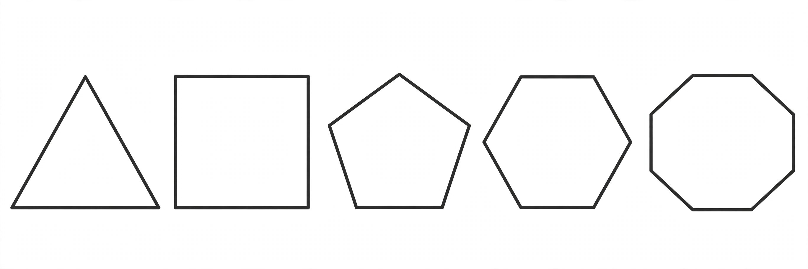

Polygon

[Image: A row of regular polygons: triangle, square, pentagon, hexagon, octagon]
In geometry, a polygon is a flat (plane) shape made of straight line segments joined to form a closed chain: triangles, quadrilaterals, pentagons, hexagons and so on, named from Greek roots for their number of sides or angles.
A polygon is regular when all sides and angles are equal. Regular polygons tile into rich patterns, appear in crystals and honeycombs, and were studied from Euclid onward; Carl Friedrich Gauss proved at 19 that the regular 17-gon can be constructed with compass and straightedge, a discovery he prized so highly he asked for the polygon on his tombstone.
Classification
Polygons are convex when all interior angles are below 180°, and concave otherwise; simple polygons do not cross themselves, while star polygons like the pentagram do. The sum of interior angles of an n-gon is (n − 2) × 180°.
In computer graphics, 3D models are meshes of polygons — usually triangles — so polygon processing underlies all modern rendering.